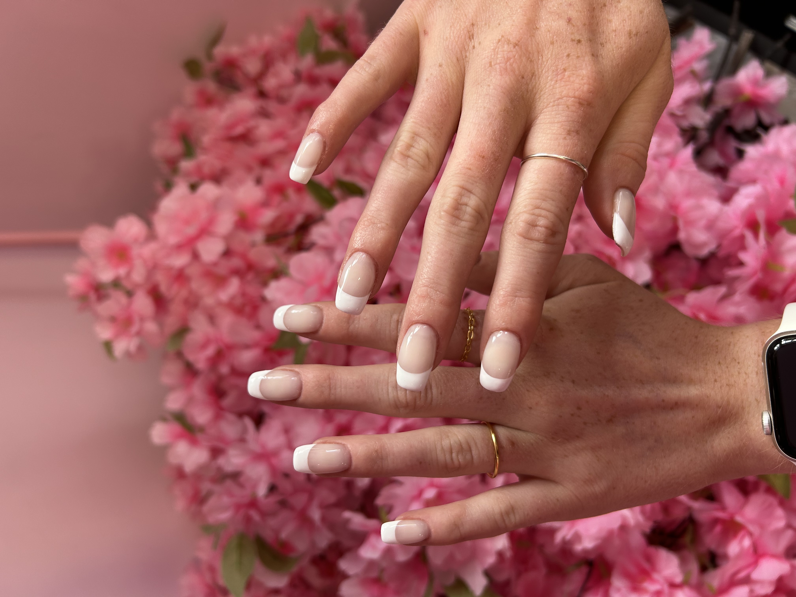
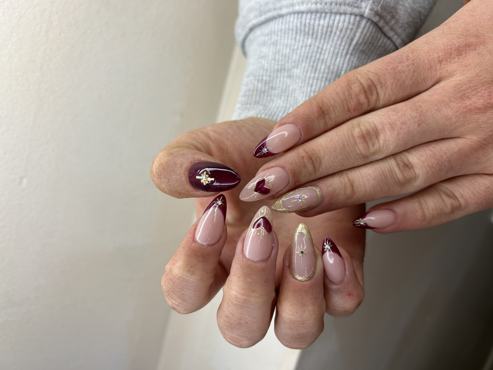
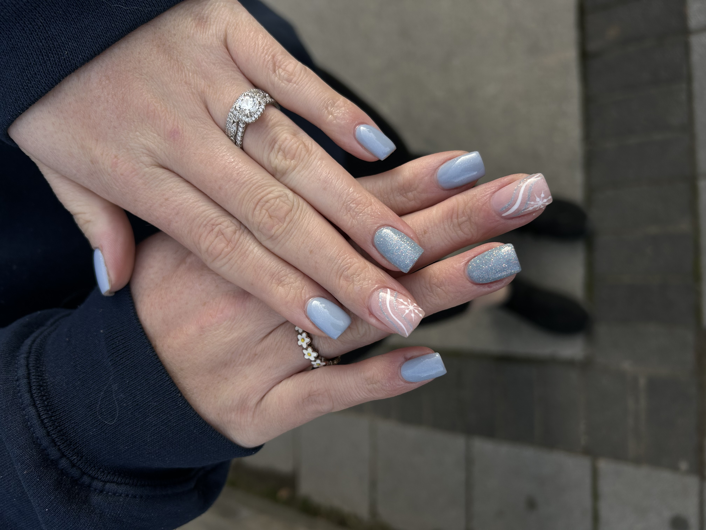

Services
At Juls Aesthetics, we offer a range of services to help you look and feel your best. From nail care to facials and spray tans, we've got you covered!
Nail Services
Prices are subject to change based on length, design, and add-ons.
Gel Manicure
A gel manicure is a service that uses a gel-based polish and requires a UV or LED light to cure the polish and lock it onto your nails. Gel polish is more durable than regular polish and will last 2-3 weeks.
Gel-X Nail Extensions
Gel-X extensions are a healthier alternative to acrylic nails. They are made of a soft gel that is cured with a UV or LED light. Gel-X extensions are thinner and more flexible than acrylic nails, making them more comfortable to wear.
Acrylic Full Set
Acrylic nails are a combination of a liquid monomer and a powder polymer that create a hard protective layer over your natural nails. Acrylics are perfect for people who want to lengthen their nails or add strength to their natural nails.
Acrylic Fill
An acrylic fill is a service that fills in the gap between your cuticle and the existing acrylic as your natural nail grows out. This service is typically done every 2-3 weeks to maintain the look and integrity of your acrylic nails.
Nail Services Descriptions
- Gel Polish: Long-lasting, chip-resistant polish that cures under UV light
- Acrylic Full Set: Durable nail extensions created using a mixture of liquid monomer and powder polymer
- Acrylic Fill: Maintenance service for acrylic nails to fill in new nail growth
- Gel-X Extensions: Soft gel nail extensions that are more flexible and natural-looking than acrylics
- Nail Art: Custom designs, from simple to elaborate, to personalize your nails
- Natural Nail Manicure: Shaping, cuticle care, and regular polish for natural nails
- Nail Repair: Fixing broken or damaged nails
- Soak-Off: Removal of gel polish or artificial nails
|

Classic Chic! |

Abstract Artistry! |

Sparkle and Shine! |
Spray Tan Services
Full Body Spray Tan
Our full body spray tan service provides a natural-looking, sun-kissed glow without the harmful effects of UV rays. The tanning solution is customized to your skin tone and desired level of darkness.
Partial Body Spray Tan
For those who want to focus on specific areas, we offer partial body spray tans. This service is perfect for touching up your tan or for events where only certain parts of your body will be exposed.
Spray Tan Preparation and Aftercare
To ensure the best results from your spray tan, we provide detailed instructions on how to prepare for your appointment and how to care for your tan afterwards. This includes exfoliation tips, product recommendations, and advice on how to make your tan last longer.
| Back to Top |